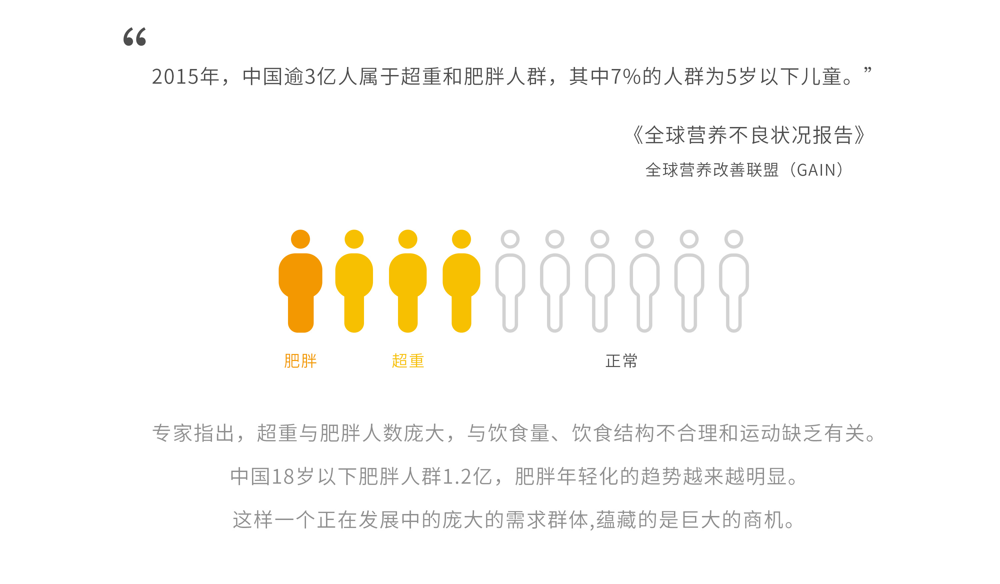
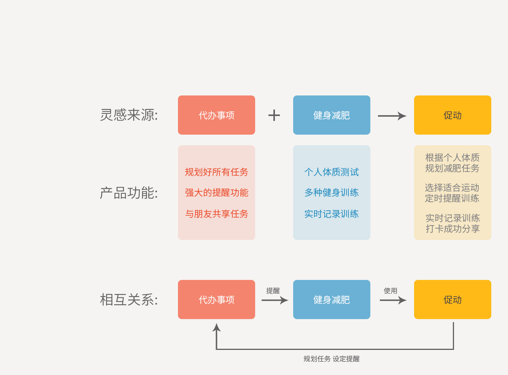
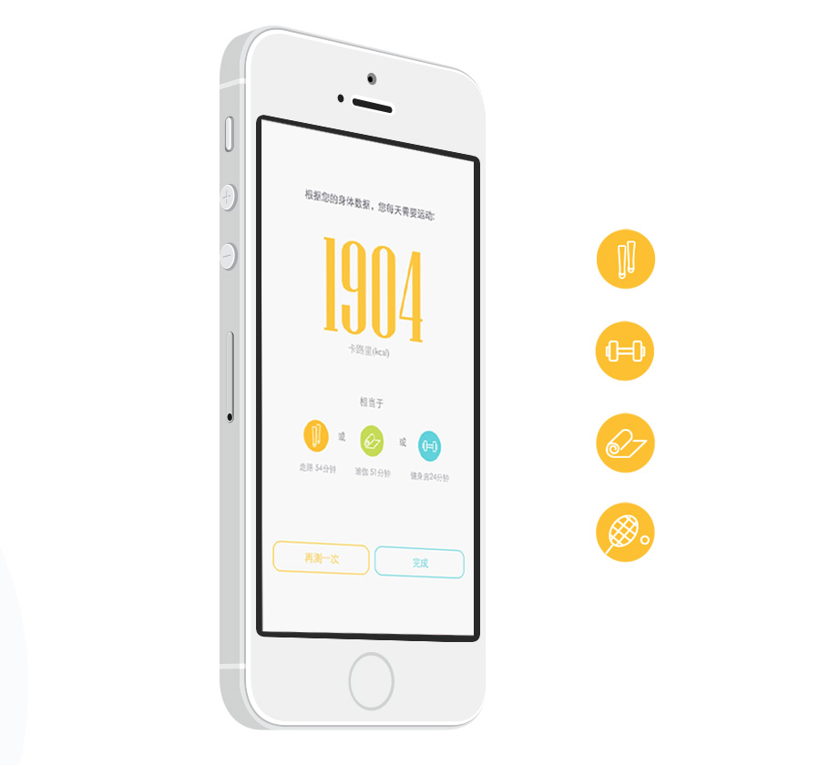
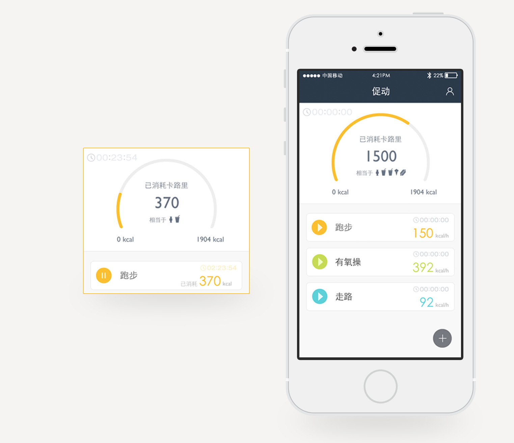
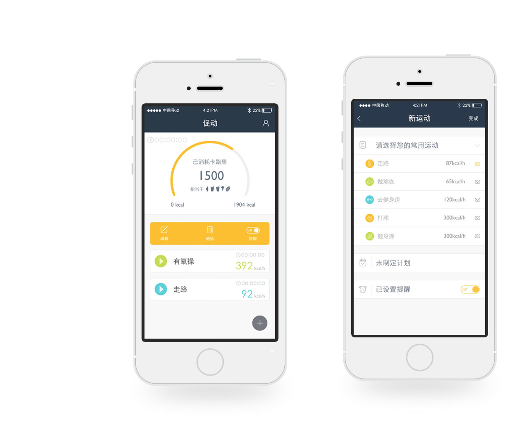
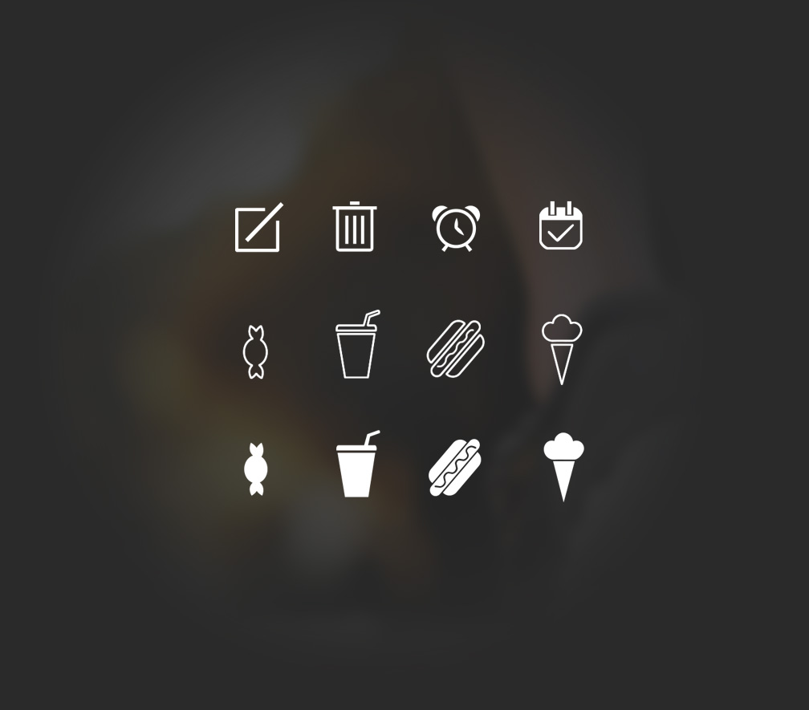

“好想减肥,但是总是坚持不下来,有人可以一直督促我就好了.”
一个微胖界的朋友对我说：“每次减肥都是一场孤独的旅行.每次开始减肥,前几天能保持,但是过了几天,我就开始拖延,给自己找借口,所以虽然一直喊着减肥,但也瘦不下来.” 通过对周围肥胖的人进行一番小调查,我发现这不是一个人的痛点,大家多少都有同样的拖延症,拖延症成了肥胖最大的阻碍.

设计来源
经过调研之后，我了解到肥胖的主要原因有两点：其一，在于心态上的懈怠，也就是“懒”；其二，周边环境的客观影响。
客观因素难以被改变，因此我选择从解决心态上的“懒”这一点出发。
代办事项类的效率应用给了我启发，制定任务，实时提醒，完成后打卡，增强成就感。使用代办事项，让整个项目或事情更容易坚持。
有了一个初步方案：将运动健身/减肥等一系列行为和效率类应用进行一个结合。
健康类的app:"促动"（促进运动的意思）诞生了。

身体数据搜集，推荐适合运动
使用生动的设计元素，有趣的交互动效，吸引用户主动填写。这种私人订制的感觉，真酷！
数据分析结果
完成每天推荐运动量，减肥瘦身不是梦，身体肯定棒！

选择运动，计时开始！
点击开始按钮，计时器开始计时，相对应的卡路里消耗也开始增加！消耗的程度使用食物的icons展现，让数据更易理解。

快速编辑运动
点击运动小模块，小模块3d翻转出新的内容，快速编辑、删除、选择是否提醒等。

图标设计
对icons进行设计，设计了一套正负型的线性风格图标。减少了视觉噪音，营造了清爽氛围。
